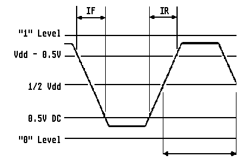

"1" Level ist logisch High, also +5 Volt
"0" Level ist logisch Low, also Masse beziehungsweise Ground
1/2 Vdd ist die Hälfte der Versorgungsspannung, also die Hälfte von
+5 Volt

16.042494MHz Takt vom Pin 191 des Combel Chips
16.042494MHz Takt am Ausgang des 74F04 nach dem durchlaufen von zwei
Gattern (Abbildung PHASENVERSCHIEBUNG)
Das Oszilloskop läßt veränderliche elektrische Vorgänge auf einer
Elektronenröhre (ähnlich wie in einem Fernseher) sichtbar werden. Die
Darstellung erfolgt durch einen sich bewegenden Leuchtpunkt auf dem
Bildschirm selber. Üblicherweise ist die Geschwindigkeit des Leucht-
punktes so groß, das er dem etrachtenden Auge als Linie erscheint
(bedingt durch die Trägheit der Sehnerven). Der Leuchtpunkt wird in
zwei senkrecht aufeinanderstehenden Richtungen abgelenkt und dadurch
über die Bildschirmfläche als Koordinateneben geführt. Ablenkung in
horizontaler Richtung - auf der Koordinatenebene trägt sie die Be-
zeichnung X-Richtung. Ablenkung in vertikaler Richtung - auf der
Koordinatenebene trägt sie die Bezeichnung Y-Richtung (die Meßspan-
nung und Signalform wird dem Y-Eingang zugeführt).
weiterblättern
Kapitel Der Clockpatch aus der ST-Computer Zeitschrift, Seite 6